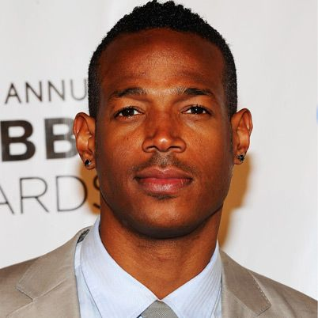

Comedy
White Chicks
"White Chicks" is a riotous comedy film directed by Keenen Ivory Wayans. The story follows two FBI agents, Kevin and Marcus Copeland, who go undercover as wealthy white socialites to foil a kidnapping plot. Disguised as the titular "white chicks," the Copeland brothers navigate through high society and hilarious mishaps.
Main Casts
Mean Girls
"Mean Girls" is a classic teen comedy film directed by Mark Waters. The story revolves around Cady Heron, a teenager who moves to a new high school and gets entangled in the complex social dynamics ruled by a group of popular girls known as "The Plastics."
Main Casts